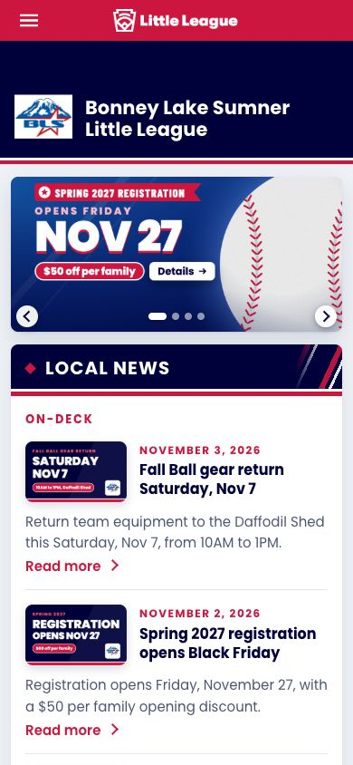
Existing page
Home
Four new rotator slides: Spring 2027 registration, new families, volunteers, and a 17-logo sponsor thank-you that matches the Sponsorship page. What ships tonight shows them on today's home look.
Ready to launch
BLS Website
Tap a page. The switch at the bottom flips between Today and Proposed. Nothing here changes the live site.

Four new rotator slides: Spring 2027 registration, new families, volunteers, and a 17-logo sponsor thank-you that matches the Sponsorship page. What ships tonight shows them on today's home look.
Ready to launch
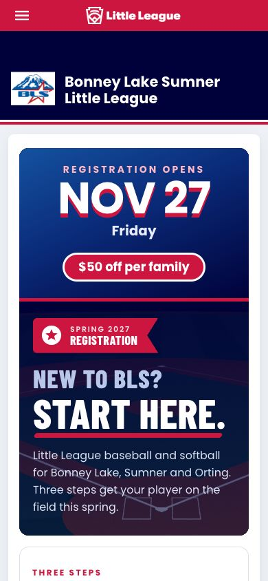
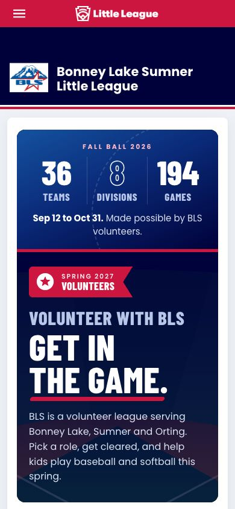
Volunteer recruiting page: Fall Ball 2026 tally, four roles (coach, umpire, team and fields, board with the open Umpire in Chief seat), employer hour matching, the three cleared-volunteer steps, then the sign-up listing.
Required to launch
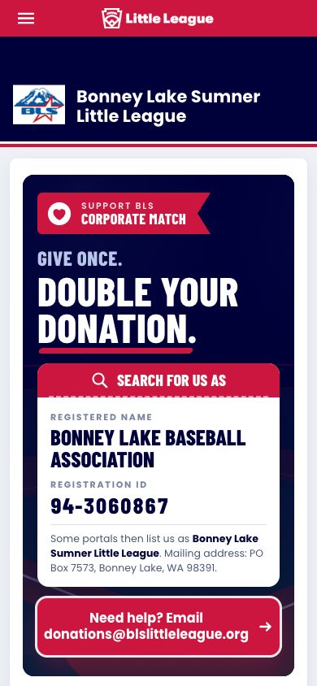
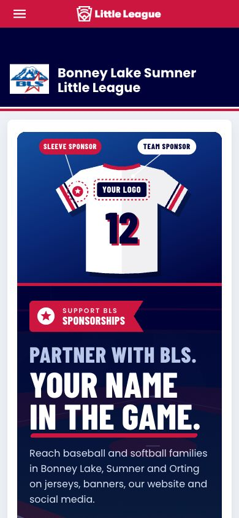
Partner with BLS: jersey hero, every spring, All Stars and Fall Ball level with perks, Fall Ball 2026 scoreboard, the same 17-logo sponsor wall as home slide 4, and 2026 community partners.
Required to launch
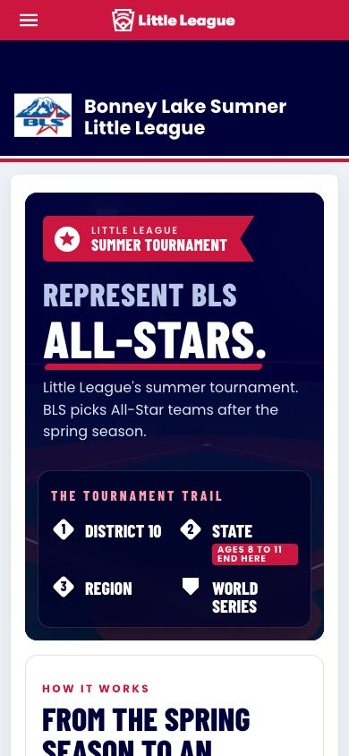
All-Stars hero with the tournament trail, three-step selection, summer commitment, required documents, 2026 District 10 dates with BLS results (two titles, 3rd at State), and a link card to the new Champions page.
Required to launch
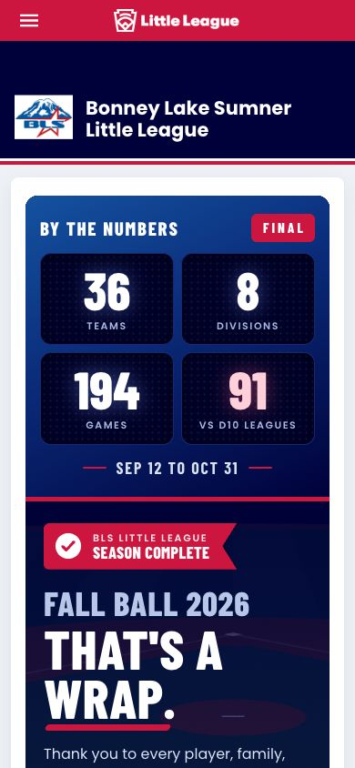
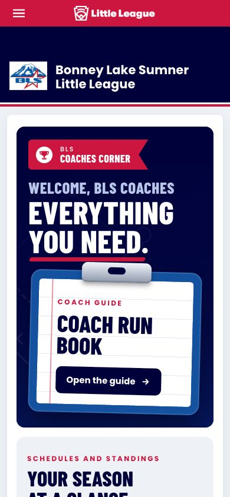
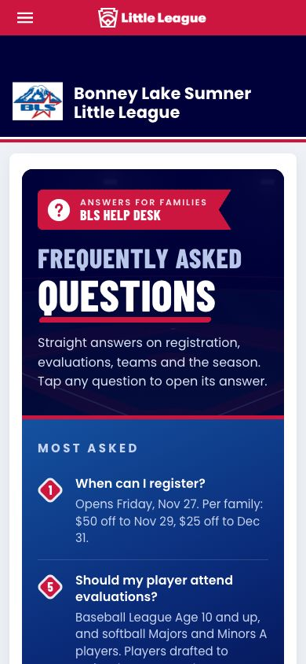
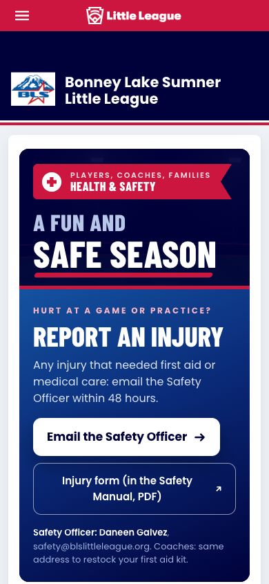
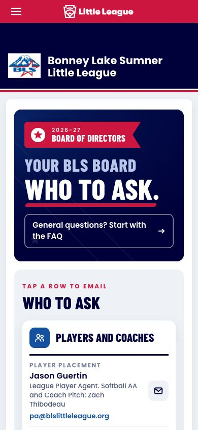
2026-27 board from the Oct 25 Annual Meeting: five officers (President as the lead card), every other seat grouped by what parents ask about with role emails, and a Get involved block (open Umpire in Chief seat, Fields Committee, meetings, the October vote).
Required to launch
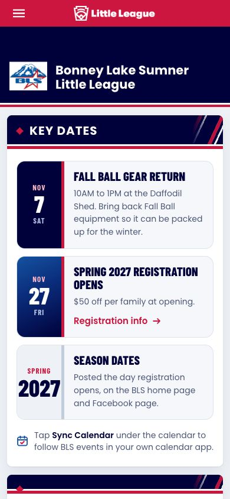
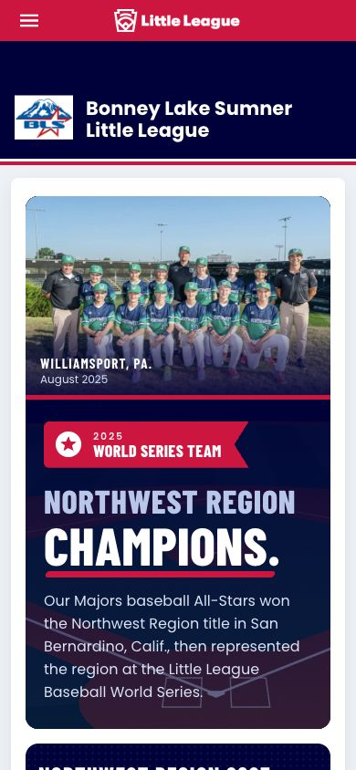
New page: 2025 Northwest Region champions hero, region scoreboard, road to Williamsport with the District and State title dates, all six August scores, a 2025 and 2026 honor roll, then Spring 2027 registration.
Required to launch
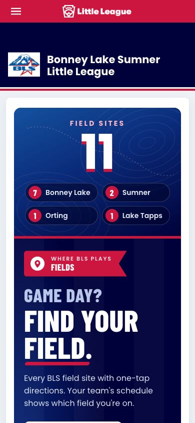
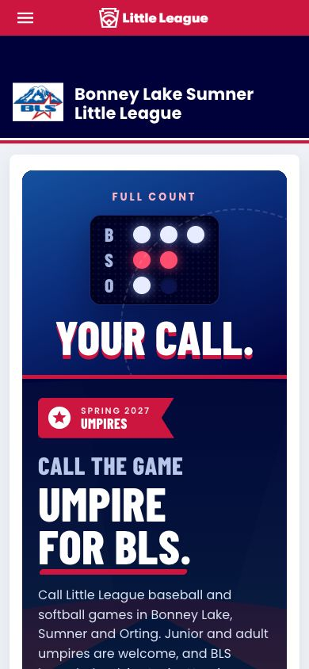